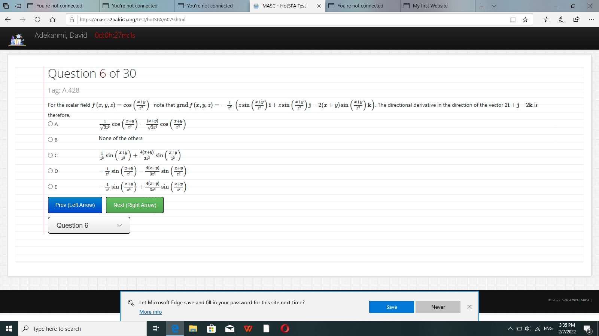

My First Website
is really good am building a website page!
This a story of a brother and sister quarelling all because of properties that entails a plot of land with a two storey building and uncompleted shops. Both brothers and sisters are from different mothers andthe first child from the first child from the first wife tayo is one and the half years older than the sister deborah
This a story a of a brother and sister qurelling all because of a properties that entails a plot land with a two storey.
building and uncompleted shops. page two both brothers and sisters are from different mothers and the first child from the first wife tayo is one and the half years older than the sister deborah.
